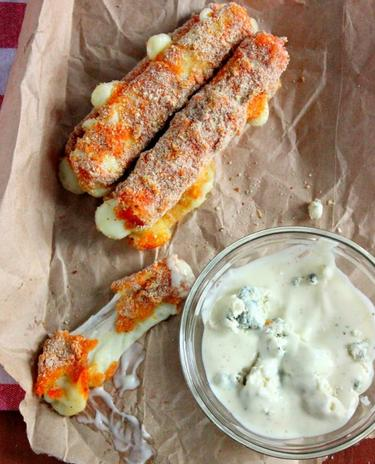

Buffalo Cheese Sticks

Description
These are great appetizers you can make in less than 15 minutes for the guys as they watch the game, sleepover, or just a random get together. You can even say they are kind of healthy because they aren’t fried!
Ingredients
- 1 lb. packaged mozzarella cheese sticks (string cheese)
- 3 c. bread crumbs
- 2 c. flour
- 2 c. Red Hot Sauce
- blue cheese dressing for dipping
Instructions
- Preheat oven to 350 Degrees and spray a baking sheet with non stick oil.
- Unwrap the mozzarella sticks. Roll the mozzarella sticks in the flour, then the hot sauce, and finally the bread crumbs. Place on the prepared baking sheet and bake for 10-12 minutes. Allow to cool for 2-3 minutes before serving.